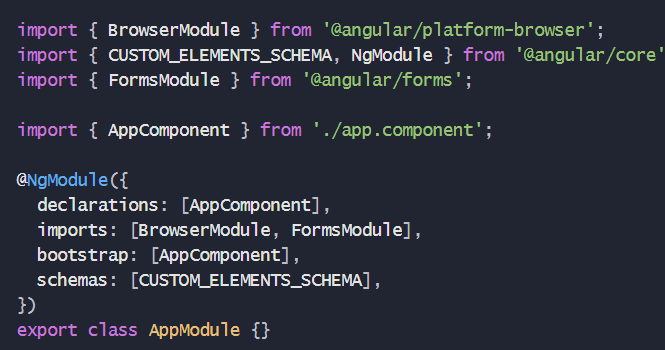
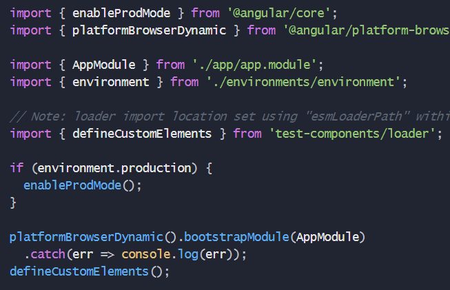

Introduction
Edge web component library is a web component library created using stenciljs. The main purpose of the library is to create reusable components which can be used in any framework.
Use the below command to install the package
npm install edge-web-comp-lib
Including the CUSTOM_ELEMENTS_SCHEMA in the app.module.ts allows the use of the web components
defineCustomElements() needs to be called once during the bootstrapping of your application to load the components in the collection.
